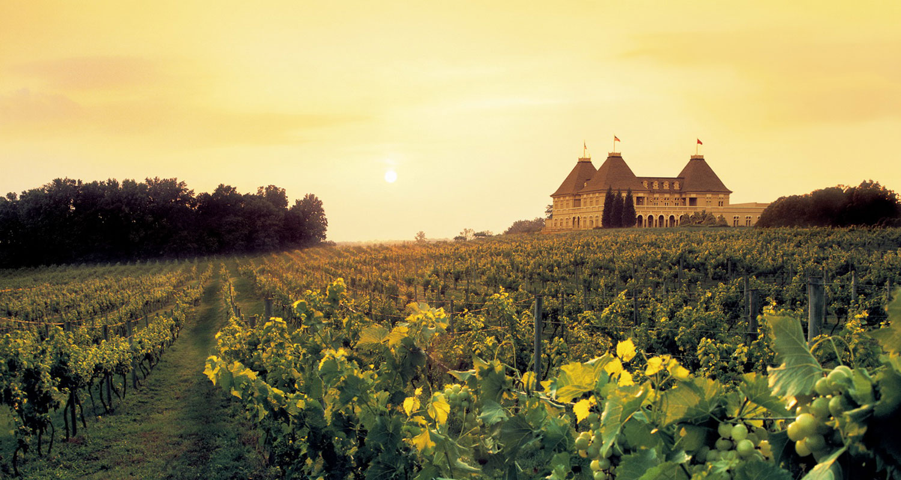

Distinguish Sparkling wine and Champagne
Although Sparkling wine and Champagne have very eye-catching bubbles and brand 'pop' when opening the bottle. Both types of wine still have their own reasons why they are classified into two different types.
Champagne is named after the region where the grape variety it is grown, fermented and bottled: Champagne, France. Nestled in the northeast corner of the country, near Paris, where the law allows only ‘Champagne’ to be labeled within 100 miles of this area (according to European Law).

Planted and cultivated by the Romans in the early 400 AD, later vineyards can easily be found on the shimmering Champagne hills and cover an area of 76,000 acres and include 319 houses. The village settled here.
Sparkling wine from around the world
The style of making sparkling wine or sparkling wine on the left is popularized all over the world. With different emphasis on efficiency, bubble sizes and methods, each country is home to a separate version. Some common types from different regions are:
Sekt: This German effervescent version may vary in sweetness and dryness and is usually less alcoholic than Champagne. During the signing of the Treaty of Versailles, France was given ownership of Champagne to Germany.
Prosecco: This famous Italian effervescent wine has a large froth and a fruity aroma that makes it a popular choice for mixed drinks like mimosas or bellinis. Made with Glera grapes as well as Bianchetta Trevigiana, this is usually a dry or very dry sparkling wine.
Cava: A sparkling Spanish wine made from grapes of Macabeu, this variety is said to taste very similar to Champagnes.
Sparkling wine from France: Sparkling wine can come from France (outside of Champagne) and has a synthetic flavor from sweet, dry and a bit of rosé.
American sparkling wines: From a blend using traditional Champagne grapes to completely different wines, there are endless flavors to explore in sparkling wines.
Champagne or sparkling wine more expensive?
A bottle of premium Champagne can cost a thousand dollars, while a bottle of sparkling wine costs less and is easier to buy. Everything that determines the value of a bottle depends on the quality of the grape and the technique to make a particular wine. While most sparkling wines are made using the Champenoise technique - the method of production of a fine bottle of Champagne, a few others cut costs, speeding up the final sale. and increase production by creating a cauldron of wine - frothy wine undergoing CO2 conversion in a huge cauldron instead of in individual bottles. When choosing a sparkling wine or a famous bottle of Champagne, your ultimate goal will be very important. If you want quality and good care, a bottle of Champagne or a high quality Sparkling bottle will be a great choice. Whereas if your budget is something to worry about or you want a party where your Sparkling bottle is mixed with other fruits, a sparkling wine bottle is less expensive and quality. Lower amount will be okay.